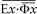
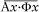
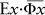

{1} Odille Jacob Yayınlan, Paris, Ekim 1997.
{2} Henley (1997).
{3} Maggiori (1997)
{4} Sokal (1996a). Bu kitabın A ekinde ayrı baskısı verilmiştir. Zıpır aldatmanın öyküsü aşağıda daha ayrıntılı olarak 1. Bölüm 'de anlatılıyor.
{5} Tartıştığımız olgunun epistemik/kognitif görecilikle kısıtlı olduğunu vurgulamak isteriz; ahlaksal ya da estetik görecilik gibi daha ince konulara değinmiyoruz.
{6} Oysa bu örtüşme kusursuz değil. Bu kitapta çözümlenen Fransız yazarlar, İngilizce konuşulan yerlerde, edebiyat fakültelerinde, kültür ya da kadın araştırmalarında son derece moda yazarlardır. Buna karşın epistemik görecilik, antropoloji, eğitim, bilim sosyolojisi gibi Lacan ya da Deleuze ile pek ilgilenmeyen alanlarda da epey yaygındır.
{7} Gazetecilerin bu yorumunu, değişik (ama apaçık) nedenlerden ötürü suç üstü (injlagrante delicto) yakalanan siyasetçiler de destekleyecektir.
{8} Marc Richelle, ilginç kitabında (1998) kimi okurların (özellikle de okumazların) kitabımızı okuduklarında bütün sosyal bilimlerin anlamsız olduğu kanısına varacaklarıyla ilgili kaygısını dile getiriyor. Ama bizim görüşümüzün böyle olmadığını da belirtiyor.
{9} Albert (1996, s. 69). Bu siyasî sorunlara Sonsöz Bölümü'nde yeniden değineceğiz.
{10} Özgün Fransızca metnin 11. Bölümü. 16
{11} Bu makalenin ayrı baskısını A ekinde, makale ile ilgili bazı açıklamaları da B ekinde veriyoruz.
{12} Bu eleştirilerin arasında, örneğin Holton (1993), Gross ve Levitt (1994) ve Gross, Levitt ve Lewis (1996)'ya bakınız. Social Terfin özel sayısı Ross tarafından sunuluyor (1996). Parodi Sokal’ındır (1996a). Parodiyi ateşleyen unsurlar daha ayrıntılı biçimde Sokal (1996c) 'de tartışılmıştır. Bunlar burada C ekinde yeniden basılmıştır, Sokal (1997a)'da olduğu gibi. Social Text'in adı geçen sayısında değinilmeyen, postmodernizmm ve toplumsal kurulmuştuk tezinin bir başka siyasî bakış açısından eleştirisi için Albert (1992-93), Chomsky (199293) ve Ehrenreich (1992-93)'e bakınız.
{13} Sokal hilesini (1996b)'de kendi açıkladı. Olanca hayretimizle bu skandalın New York Times (Scott 1996), International Herald Tribüne (Landsberg 1996),
{14} Daha kapsamlı bir tartışma için Sokal (1998)'e bakınız. [Londra] Observer (Ferguson 1996), Le Monde (Weill 1996) ve birçok belli başlı gazetenin birinci sayfasına yerleştiğini gördük. Tepkiler arasında özellikle şu çözümlemelere bakınız: Frank (1996), Pollitt (1996), Willis (1996), Albert (1996), Weinberg (1996a, 1996b), Boghossian (1996) ve Epstein (1997).
{15} Bu kitapta listeye Jean Baudrillard ve Julia Kristeva'yı da ekledik. Lamont (1987, 4. not) tarafından tanımlanmış “en önemli” on Fransız filozofundan beşi; Baudrillard, Deleuze, Derrida, Lyotard ve Serres'dir. Mortley'in (1991) seçtiği altı Fransız filozofundan üçü; Derrida, Irigaray ve Serres'dir. Rötzer'in (1994) söyleşi yaptığı sekiz Fransız filozofundan beşi; Baudrillard, Derrida, Lyotard, Serres ve Virilio 'dur. Bütün bu yazarlar Le Mond’un (1984a,b) söyleşi yaptığı otuz dokuz batı düşünürü arasındadır. Ayrıca Lechte'nin (1994) seçtiği 50 çağdaş Batı düşünürü arasında Baudrillard, Deleuze, Derrida, Irigaray, Kristeva, Lacan, Lyotard ve Serres'i buluyoruz. Burada “filozof”' geniş anlamda kullanılmıştır; bunun için “edebî-felsefi entelektüel” daha doğru bir terim olurdu.
{16} Bu alanlardaki “iyi” çalışmalara bazı okurların önerdiği gibi örnek vermememizin nedeni böyle bir listeyi hazırlamanın bizi aşıyor olmasıdır. Ortaya çıkabilecek yarım yamalak bir liste de bizi güç duruma düşürürdü ve birileri haklı olarak bize “neden şunlardan söz ediyorsunuz da bunlara hiç değinmiyorsunuz” diyebilirdi.
{17} Birçok eleştirmen (Droit 1997, Stengers 1997, Economist 1997) bizi Lacan'a, Kristeva ve diğerlerine matematik ve fizikten kötü not veren lise öğretmenlerine benzetiyor. Ama bu benzetme doğru değil çünkü okulda öğrencilerin bazı konuları öğrenmeleri zorunludur, oysa kimse bu yazarları yazılarına matematiksel kavramları sokmaya zorlamıyor.
{18} Alıntının tamamı için Derrida (1970, s. 265-268)'e bakınız.
{19} Serres'in yapıtlarındaki daha belirgin kötüye kullanma örnekleri için 11. Bölüm'e s.240, 278-79'a bakınız.
{20} En azından İngilizce konuşulan akademide iddialarının ciddiye alındığını göstermek için, örneğin Lacan'ın topolojisini ve matematiksel mantığını, Iriga-ray'm akışkanlar mekaniğini, Deleuze ile Guattari'nin bilimmiş gibi görünen uydurmalarını çözümleyen başka yapıtlardan da alıntılar yapacağız.
{21} Dilbilimci Noam Chomsky konuyu çok güzel ortaya koyuyor:
Meslek yaşamım boyunca çok çeşitli alana el attım. Örneğin belgeli, profesyonel bir matematikçi olmamama rağmen matematiksel dilbilim konusunda işler yaptım. Bu konudaki eğitimim pek de iyi değildi çünkü kendi kendimi eğitmiştim. Ama yine de sık sık üniversitelerde matematik seminerlerine ya da oturumlarına matematiksel dilbilim konusunda konuşmak üzere çağrılırdım. Hiçbir zaman, kimse bana bu konularda konuşma hakkını veren belgelerimin olup olmadığını sormadı. Matematikçiler böyle şeyleri pek umursamazlardı, onlar daha çok söylediklerimle ilgilenirlerdi. Hiç kimse matematikte doktoram olup olmadığına ya da bu konuda ileri dersler alıp almadığıma bakarak konuşma hakkımı sorgulamadı. Zaten sorgulamak akıllarının ucundan bile geçmezdi. Onlar doğru söyleyip söylemediğime, anlattıklarımın ilginç olup olmadığına, bu konulara yaklaşımda daha iyi seçenekler olup olamayacağına bakarlardı. Yani tartışmalar benim bu konuları tartışabilme hakkımla ilgili değil de konuların içeriğiyle ilgili olurdu.
Öte yandan Amerikan dış politikası, Vietnam ya da Ortadoğu sorunu gibi toplumsal içerikli tartışmalarda bu kimlik sorunu hep gündeme gelir ve gerginlik yaratırdı. Sürekli diplomalar ve belgeler konusunda üstüme gelinir ya da hangi özel eğitimimin bana bu meseleleri tartışabilme yetkisini verdiği sorgulanırdı. Profesyonel bir görüşü olmayan ya da bu meslek dünyasının dışında duran benim gibi insanların bu gibi konularda konuşma hakkı olmadığı düşünülürdü.
Matematik ve siyaset bilimlerini karşılaştırın. Ne kadar çarpıcı değil mi? Matematik ve fizikte insanlar sizin diploma ve belgelerinizle değil söylediklerinizle ilgileniyorlar. Oysa toplumsal gerçekler hakkında konuşabilmeniz için uygun belgelerle donanmış olmanız gerekiyor, özellikle de söyledikleriniz genel geçer düşüncelerden sapıyorsa. Dolayısıyla, bir disiplinin entelektüel malzemesi zenginleştikçe belgelere ve kimliğe olan ilgisi azalıp içeriğe olan ilgisi artıyor demek genel olarak haksızlık olmaz gibime geliyor (Chomsky 1979, s.6-7).
{22} Levi-Leblond (1997) ve Fuller (1998)'e bakınız.
{23} Biyolojinin, bilgisayar bilimlerinin ya da dilbilimin kötüye kullanımıyla ilgili bir projeye girişmek de ilginç olabilirdi. Oysa biz bu işi, bu konularda bizden daha usta olanlara bırakıyoruz.
{24} Yeri gelmişken daha önce yaptığımız bu tür iki değerlendirmeye örnek verelim: Prigogine ve Stengers'in kaos, tersinmezlik ve zamanın akış yönü konusunda yazdıkları popüler kitabın ayrıntılı bir çözümlemesi (Brickmont 1995a) ve kuantum mekaniğinin Kopenhag yorumunun eleştirisi (Brickmont 1995b).
Bizce Prigogine ve Stengers ilgilendikleri konuyu biraz çarpıtarak mürekkep yalamış bir topluluğa sunuyorlar. Ama buradaki kötüye kullanım bizim bu kitapta incelediklerimizin yanında hiç kalır. Kopenhag yorumundaki yetersizlikler çok daha incedir.
{25} Eribon (1994, s. 70)
{26} Bu tür siyasî ve kültürel temaları Sonsözde yeniden ele alacağız.
{27} Bir Möbius şeridi, dikdörtgen biçimindeki bir kâğıt şeridin kısa kenarlarından biri 180 derece döndürülüp öbür kısa kenara yapıştırılarak elde edilebilir. Böylece yalnız bir yüzü olan bir yüzey elde edilmiş olur, yani “ön” yüzle “arka” yüz kesiksiz bir yolla birleşmektedir.
{28} Torus, can simidi biçiminde bir yüzeydir. Klein şişesi Möbius şeridine benzer ama kenarları yoktur; bu yüzeyin somut olarak gösterilebilmesi için en az dört boyutlu bir Öklid uzayı gerekir. Olasılıkla bir yazım hatası nedeniyle “Cross-cut” olarak yazılan Cross-cap de başka tür yüzeylerden biridir.
{29} Burada, matematik bağlamında sınırlı anlamına gelen “borne” sözcüğünün çevirisini düzelttik.
{30} Çevirenin notuna ya da Roustang'a (1990, s. 87) göre “geçen yılki söylemim” Lacan (1973)'e göndermedir. Dolayısıyla biz de “topolojiyle yapının kesin eşdeğerliğinin” nasıl “gösterildiğini” anlamak için bu makaleyi yeniden okuduk. Makale, topoloji, mantık, psikanaliz, eski Yunan felsefesi, ayrıca çöp sepetinden çıkabilecek neredeyse her şeyin karışımı olan uzun (ve gerçekten garip) meditasyonlar içeriyordu. Ama iddia edilen topoloji-”yapı” eşdeğerliğine ilişkin yalnız şu vardı:
Topoloji, yapı içinde “bize yol göstermek için yapılmamıştır”. Bu yapı, dili oluşturan, zincirleme düzende bir geriye yürüyüş olarak yapıdır.
Yapı, bir özne etkisi onu ele geçirinceye kadar, dilin konuşulmasındaki küresel olmayan gizdir.
Anlam söz konusu olduğunda, alt-tümcenin bu “onu ele geçirme”sinin -yalancı kip-dilbilgisel öznesi içinde bir yüklem olarak sarmaladığı nesnenin kendisinden yankılandığı ve özne etkisinin küre dışı(!) bir girdap mı yoksa etkinin öznelliğinin kendisini bunun içinden mi “yansıttığına” bağlı olarak anlamın bir yanlış etkisi olduğu, topolojinin yol açtığı hayaliliğin bir rezonansı olduğu açıktır.
Burada, anlamlamadan kaynaklanan muğlaklık, yani kesitin halkası, önerilen delikten, yani yapıdan, bu belirsizliği anlamlı kılan şeyden ayırt edilmelidir. (Lacan 1973, s.40). Lacan’ın bulandırmalarını bir yana bırakırsak yapı ve topoloji arasındaki ilişkiyi anlamak aslında kolaydır. Ama bu “yapı” ile ne denmek istendiğine bağlıdır. Yapı, matematiksel yapılarla birlikte dilsel ya da toplumsal yapıları da içerebilecek biçimde geniş anlamıyla ele alınırsa, bunun saf matematiksel “topoloji” kavramına indirgenemeyeceği açıktır. Oysa “yapı”yı matematikteki kesin anlamıyla düşünürsek topolojinin bir tür yapı olduğu, ama öte yandan düzen yapısı, grup yapısı, yöney (vektör)-uzayı yapısı, katmanlı uzay yapısı gibi birçok başka yapının da varlığı kolayca görülebilir.
{31} Son iki cümlenin bir anlamı varsa bile bunların geometriyle hiçbir ilgisi yoktur.
{32} Pekişiklik [compactness], topolojideki önemli teknik kavramlardan biridir ama açıklaması oldukça güçtür. Kısacası, 19. yüzyılda matematikçiler (Cauchy, Weierstrass ve diğerleri) limit kavramına çok kesin bir anlam kazandırarak matematiksel çözümlemeyi sağlam temellere oturtmuşlardır. Bu limitler başlangıçta gerçek sayı dizileri için kullanılıyordu ama yavaş yavaş limit kavramının işlev (fonksiyon) uzaylarına da (örneğin türevsel ya da tümlevsel denklemleri inceleyebilmek için) uygulanabilecek biçimde geliştirilebileceği fark edildi. Topoloji kısmen bu çalışmaların sonucunda 1900 civarında doğdu. Şimdi, topolojik uzaylar içinde pekişik uzaylar bir alt sınıf olarak tanımlanmaktadır ve her öğe dizisinin, limiti olan bir altdizi içermesiyle diğer topolojik uzaylardan ayrılır. (Burada kendimizi metrik uzaylarla sınırlayarak konuyu biraz basitleştiriyoruz). Verdiğimiz bu tanımla aynı olduğu kanıtlanabilir başka bir tanım da sonsuz bir kapalı küme topluluğunun kesişim özelliklerine dayanır. Sonlu boyutlu Öklid uzaylarının altkümelerinin söz konusu olduğu özel durumlarda bir küme ancak ve ancak kapalı ve sınırlı ise pekişiktir. Burada italik harflerle yazılmış tüm sözcükler kesin tanımları olan teknik terimlerdir (genellikle bu tanımlar başka zincirleme tanımlara ve teoremlere dayanırlar).
{33} 3. dipnota bakınız
{34} Lacan bu tümcede açık kümeyi yanlış tanımlıyor. Yaptığı limit “tanımı“ da anlamsız. Ama bunlar söylemin genel kargaşasının ve bulanıklığının yanında ufak tefek şeyler.
{35} Bu paragraf, tam bir ukalalık. İlke olarak, bir küme sonluysa elbette “sayılabilir” ve “düzene” konabilir. Oysa, matematikteki sayılabilirliğe (3. Bölüm 3. dipnota bakınız) ya da kümelerin düzene konulabilirliğine değin tüm tartışmalar sonsuz kümelerle ilgilidir.
{36} 3. dipnota bakınız.
{37} Bir sayı iki tam sayının oranı olarak yazılamıyorsa bu sayıya irrasyonel denir, örneğin 2'nin kare kökü ya da 7t sayısı bu tür sayılardır. Buna karşın 0 bir tam sayıdır ve dolayısıyla kaçınılmaz olarak bir rasyonel sayıdır. Öte yandan imajiner sayılar, gerçek sayılar içinde çözümü olmayan bazı polinom denklemlerinin çözümleri olarak tanımlanırlar: örneğin x2+l=0 denkleminin çözümlerinden birisi i=VTT diğeri de -i olarak verilir.
{38} Lacan 'm “algoritmasının” en az aslı kadar gülünç olan bir yorumu için Nancy ve Lacoue-Labarthe (1992,1. cilt, 2. Bölüm)'e bakınız.
{39} Bu son tümce, matematiksel mantıkta kümeler yoluyla doğal sayıları tanımlamak için kullanılan bir teknik süreçle ilgili karışık bir değini olabilir: 0, 0 (boş küme) yani öğesi olmayan kümeyle tanımlanır; 1, (01 kümesiyle, yani tek öğesi 0 olan kümeyle tanımlanır; 2,)0,{0}j kümesiyle, yani iki öğesi 0 ve (0) olan kümeyle tanımlanır, bu böyle sürer gider.
{40} Burada Lacan’ın değindiği paradoksu Bertrand Russell (1872-1970) ortaya koymuştur. Önce, birçok “normal” kümenin kendini bir öğe olarak içermediğini söyleyerek işe başlayalım: örneğin, bütün iskemleler kümesinin kendisi bir iskemle değildir, bütün tam sayılar kümesi bir tam sayı değildir, vb. Ama öte yandan bazı kümeler görünüşte bir öğe olarak kendilerini içerirler: örneğin, bütün soyut düşünceler kümesinin kendisi de bir soyut düşüncedir, bütün kümelerin kümesi de bir kümedir, vb. Şimdi, bütün “kendini bir öğe olarak içermeyen kümeler” kümesini düşünün. Bu küme kendi kendini içerir mi? Yanıt evet ise, bu küme kendi kendini içermeyen kümeler kümesine ait olamaz, dolayısıyla bu kez yanıt hayır olmalıdır. Ama yanıt hayır ise, bu küme “kendi kendini içermeyen kümeler” kümesine ait demektir, bu kez de yanıt evet olmalıdır. Mantıkçılar bu paradokstan kurtulabilmek için saf küme kavramı yerine değişik aksiyomatik kuramlar koymuşlardır.
{41} Bu da belki Georg Cantor'un (1845-1918) “bütün kümelerin kümesi”nin varlığı ile ilgili ortaya attığı farklı (ama diğeriyle ilişkili) bir paradoksa ilişkin bir değini olabilir.
{42} Lacan'ın matematiksel mantığı üzerine pek muhterem yorumlar için örneğin Miller (1977/78) ve Ragland-Sullivan (1990)'a bakabilirsiniz.
(*) İngilizcesi 'sexual relation'. 'Relation' bağıntı, alaka anlamına da gelir. - e.n.
{43} Lacan’ın dili o kadar karanlık ve dil bilgisinden yoksun ki, çevirmek için elimizden geleni yaptık.
{44} Matematiksel mantıkta ∀x simgesi “bütün x'ler”, ∃x simgesi ise “en az bir x vardır ki” (ya da kısaca “bazı x'ler”) anlamına gelir. Bunlara sırasıyla “evrensel niceleyici” ile “var oluş niceleyicisi” denir. Lacan daha sonra metnin içinde aynı kavramları belirtmek için Ax ve Ex yazıyor.
{45} Aynen öyle. Bu çizgi ” “ olumsuzlama anlamına gelir (“... değildir”), dolayısıyla Ax ya da Ex gibi yalın niceleyicilere değil, yalnız tamamlanmış önermelere uygulanabilir. Burada Lacan'ın  ve  demek istediği düşünülebilir; bunlar aslında mantıksal olarak, Lacan’ın başlangıçtaki Ax·Φx ve  önermeleriyle tam aynıdır. Ama Lacan, niyetinin bu önermeleri bayağı bir biçimde yeniden yazmak olmadığını açıkça söylüyor. Herkes yeni bir notasyon ortaya atmakta özgürdür ama ne anlama geldiğini de açıklamak zorundadır.
{46} Kristeva’nın yorumcularından biri, Toril Moi, durumu şöyle açıklıyor:
1966'da Paris, Jacques Lacan'ın Ecrits'inin, Michel Foucault'nun LetMots et les choses'sinin yayınlanmalarının yanı sıra genç bir dilbilimcinin Bulgaristan’dan gelmesine de tanık oldu. Yirmi beş yaşındaki Kristeva... Paris'in Sol-Yakasına kasırga gibi girdi... Kristeva'nın dilbilimsel araştırmaları yakında iki önemli kitabın, Le Texte du roman ve Séméiotiké'nin yayınlanmasıyla sonuçlanacak ve yoğun bir doktora tezi olan La Révolution du langage poétique'in 1974'te yayınlanmasıyla da doruğa erişecekti. Bu kuramsal üretim, Kristeva'ya Paris Üniversitesinde bir dilbilim bölümü başkanlığı kazandırdı. (Moi 1986, s.1)
{47} Burada Kristeva üstü örtülü olarak dilbilimdeki “Sapir-Whorf tezi”ne başvurur gibi görünüyor. Bu tez kabaca, dilimizin dünya görüşümüzü kökten koşullandırdığını söyler. Bu günlerde bazı dilbilimciler bu tezi sert bir biçimde eleştiriyorlar: örneğin Pinker'e (1995, s. 57-67) bakınız.
{48} “Süreyin gücü” matematikte, Georg Cantor ve başka matematikçiler tarafından 1870'lerden başlayarak geliştirilen sonsuz kümeler kuramına ilişkin bir kavramdır. Sonsuz kümeler değişik “büyüklüklerde” (ya da say allıkta, [cardinality]) olabilirler. Bazı sonsuz kümelere sayılabilir diyoruz: örneğin bütün artı tam sayılar kümesi (1, 2, 3, ...) ya da daha genel söylersek, öğeleri artı tam sayılar kümesiyle bire-bir eşlenebilen bütün kümeler sayılabilir kümelerdir. Ama öte yandan 1873'te Cantor, tüm gerçek sayılar kümesiyle, tam sayılar kümesi arasında bir bire-bir eşleme yapılamayacağını kanıtlamıştır. Dolayısıyla gerçek sayıların tam sayılardan bir anlamda daha “kalabalık” oldukları söylenebilir. Bu durumda gerçek sayılar, ve onlarla birebir eşlenebilen bütün kümeler süreyin sayallığına (ya da gücüne) sahiptir denir. İlk bakışta şaşırtıcı gibi görünen bir noktayı daha vurgulayalım: tüm gerçek sayılarla, belli bir aralıkta bulunan gerçek sayılar (örneğin, 0 ile 1 ya da 0 ile 2 aralığındaki sayılar) arasında bire-bir eşleme yapılabilir. Daha genel söylersek, bütün sonsuz kümeler, bazı astkümeleriyle bire-bir eşlenebilirler.
{49} Çeviri bize ait. Bunun ve izleyen alıntının biraz değişik bir çevirisi Kristeva (1980, s.70-72)'de bulunabilir.
{50} Matematikte “sonlu ötesi” terimi ile “sonsuz” aşağı yukarı eş anlamlıdır. Bu terim daha çok bir “sayal sayıyı” ya da bir “sıral sayıyı” betimlerken kullanılır.
{51} Yukarıda 3. dipnotta gördüğümüz gibi, sonsuz kümeler (sayallar dediğimiz) değişik “büyüklüklerde” olabilirler. “Sayılabilir” dediğimiz en küçük sonsuz sayal, artı tam sayılar kümesinin karşılığıdır. “Süreyin sayalı” dediğimiz daha büyük sayal ise tüm gerçek sayılar kümesinin karşılığıdır. Cantor'un 19. yüzyılın sonlarına doğru ileri sürdüğü sürey hipotezi (SH), sayılabilir ve sürey arasında bir “ara” sayal olmadığını söyler. Genelleştirilmiş sürey hipotezi (GSH) ise bu düşüncenin çok daha büyük sonsuz kümelere uygulanabilecek biçimde genişletilmişidir. Cohen 1964'te SH'nin (ve GSH'nin) küme kuramının aksiyomlarından bağımsız olduğunu kanıtlamıştır. Bir başka deyişle, ne bu hipotezin kendisi ne de olumsuzu, küme kuramının aksiyomlarından yola çıkarak kanıtlanamaz.
{52} Bu, (aksiyomatik küme kuramı türlerinden biri olan) Gödel-Bernays küme kuramında teknik bir sonuçtur. Kristeva bunun şiirsel dille ne ilgisi olduğunu açıklamıyor. Bu arada yeri gelmişken söyleyelim, bu tür teknik sonuçların önüne “bilindiği gibi” lafını koymak, tipik bir entelektüel terörizm örneğidir.
{53} Lautreamont'un (1846-1870), 1937 ile 1940 arasında geliştirilmiş Gödel-Bernays küme kuramını, hatta (1870'den sonra Cantor ve diğerleri tarafından geliştirilmiş) küme kuramını bile “bilinçli bir biçimde uygulamış” olması pek olanaklı değildir.
{54} Gödel ünlü makalesinde (1931), matematiksel mantıktaki (temel aritmetiği oluşturmak için fazla karmaşık olan) bazı biçimsel sistemlerin bütünsel olmadığına ilişkin iki ana teoremi kanıtlamıştır. Gödel'in birinci teoremi, belli bir biçimsel sistem içinde (bu sistem tutarlıysa) ne kanıtlanabilir ne de yanlışlanabilir bir önerme ortaya koyuyor. (Bu sistem içinde biçimlendirilemeyecek bir akıl yürütmeyle bu önermenin doğru olduğu görülebilir.) Gödel'in ikinci teoremi ise bir sistemin tutarlı olması koşulunda, sistemin bu özelliğinin sistemin kendi içinde biçimlendirilmiş araçlar kullanılarak kanıtlanamayacağını söyler.
Oysa tutarsız (yani kendiyle çelişen) aksiyom sistemleri icat etmek çok kolaydır. Bir sistem tutarsız olduğunda da, her zaman (o sistemin içinde biçimlendirilmiş araçlar kullanarak) bu tutarsızlığı kanıtlamanın bir yolu vardır. Bu kanıtı bulmak bazen çok güç olabilir ama neredeyse “tutarsız” sözcüğünün tanımı gereği böyle bir kanıt her zaman vardır.
Gödel teoremine çok güzel bir giriş için Nagel ve Newman (1958)'e bakınız.
{55} 2. Bölüm'de 15. dipnota bakınız. Söz konusu kümeler (bir toplumdaki bireyler gibi) sonluysalar hiçbir sorunun çıkmayacağını ayrıca belirtelim.
{56} Nicolas Bourbaki, ileri gelen bir grup Fransız matematikçinin takma adıdır. Bu grup, 1930'ların sonlarından bu yana Matematiğin Temelleri adlı yaklaşık otuz ciltlik bir dizi yayınlamıştır. Ama bu kitaplar adları gibi temel değildirler oldukça ileri düzeydedirler. Kristeva’nın Bourbaki'yi okuyup okumadığını bilemeyiz ama bu göndermesinin okuru etkilemekten başka bir işlevi yoktur.
{57} C0(R3) uzayı, R3'te tanımlanmış, “sonsuzda 0'a giden” gerçek değerli sürekli işlevlerin tümünden oluşur. Ama bu kavramın tam tanımı için Kristeva: (a) F(X) yerine ∣F(X)∣ ; b) “n'yi aştığı” yerine “1/n'yi aştığı”; c) “R3'te tanımlanmış bütün sürekli F işlevleri” yerine “R3'te tanımlanmış ... özelliğindeki bütün sürekli F işlevlerini içeren” demeliydi.
{58} Burada sözcüklerin birbirleri yerine uygunsuz kullanımı büyük olasılıkla iki yanlışın bir araya gelmesinden kaynaklanıyor: birincisi Kristeva galiba belirteç [predicate] mantığını önermesel [propositional] mantıkla karıştırmış; ikincisi, kendisi ya da editörü bir yazım hatasıyla önermesel [propositionnelle] yerine orantılı Iproportiomıelle] yazmış.
{59} Elbette romantizmden Heidegger'e kadar birçok göreci zaman ruhu kaynağı vardır ama bunlarla burada ilgilenmeyeceğiz.
{60} Elbette “nesnellik” sözcüğünün anlamında, gerçekçilik, gelenekselcilik ve pozitivizm gibi doktrinlerde yansıtılan birçok nüansla birlikte bu sözcüğü kullanıyoruz. Ama öte yandan tüm bilimsel söylemin, “basit bir toplumsal kurgudan öte bir şey olmadığını” da çok az bilim insanı kabul eder herhalde. Birimizin daha önce de yazdığı gibi, kuantum alan kuramının Emil Post'u olmaya hiç niyetimiz yok (Sokal 1996c, s.94, burada C ekinde yeniden verilmiştir)
{61} Kendimizi doğa bilimleriyle sınırlıyor ve örneklerimizin çoğunu kendi alanımız olan fizikten veriyoruz. Çeşitli sosyal bilimlerin bilimselliği gibi ince konulara burada girmeyeceğiz.
{62} Bertrand Russell (1948, s. 196) hoş bir öykü anlatıyor: “Bir kez ünlü bir mantıkçıdan, Bayan Christine Ladd Fraklin'den bir mektup almıştım. Solipsist olduğunu, ama başka solipsist görmediğine şaştığını yazıyordu”. Bunu Devitt (1997, s.64)'ten öğrendik.
{63} Bunu söylemekle, nesnelerle algılar arasındaki bağlantının nasıl kurulduğuna ilişkin soruna tümüyle doyurucu bir yanıt verdiğimizi öne sürmüyoruz.
{64} Bu hipotez, bilimdeki, özellikle de yaşam bilimlerinin evrim kuramındaki gelişmelerden sonra daha da derin bir açıklama kazanıyor. Dış dünyayı (ya da en azından onun bazı önemli yanlarını) iyi kötü sadık bir biçimde yansıtan duyu organlarına sahip olmak, evrimsel açıdan açıkça bir avantaj sağlamaktadır. Bu sav kökten kuşkuculuğu alt etmez, ama kuşkuculuk karşıtı dünya görüşünün tutarlılığını kesinlikle artırır.
{65} Örneğin, su bize sürekliliği olan bir akışkanmış gibi görünür ama fizik ve kimya deneyleri bize suyun atomlardan yapıldığını öğretmiştir.
{66} Bu bölümde bilimsel bilgiyle günlük bilgi arasındaki yöntemsel sürekliliği öne çıkarmak istiyoruz. Bizce, çeşitli göreci başkaldırıları yanıtlamanın ya da “veriler aracılığıyla kuramların yeterince belirlenemeyeceği” gibi doğru felsefî düşüncelerin köktenci yorumlarıyla ortaya çıkan akıl karışıklığının giderilmesinin en iyi yolu budur. Ama bu bağlantıyı fazla zorlamak da saflık olur. Bilim, özellikle de temel fizik, sezgisel olarak kavraması güç ya da sağduyuyla doğrudan bağdaştırılamayan kavramlar ortaya koyar. (Örneğin: Newton mekaniğinde evren boyunca etkili olan anlık kuvvetler, Maxwell kuramında boşlukta “titreşen” elektromanyetik alanlar, Einstein genel görecelik kuramında eğrilmiş uzay-zaman.) Çeşitli gerçekçiler ve gerçekçilik karşıtları (örneğin, instrumantalistler ya da pragmatistler) bu kuramsal kavramların anlamlarının konu olduğu tartışmalarda yerlerim alırlar. Göreciler bazen sıkıştıklarında instrumantalist konumuna düşerler ama bu iki tutum arasında derin farklar vardır. Instrumantalistler, ya “gözlenemeyen” kuramsal varlıkların gerçekten var olup olmadıklarını bilmenin bir yolu olmadığım ya da bunların anlamlarının yalnızca ölçülebilir nicelikler aracılığıyla tanımlanabileceğini savunurlar; ama bu, onların bu tür varlıkları, anlamlarının bilim-dışı etkenlerden (örneğin bilim insanının kişiliğinden ya da o insanın ait olduğu topluluğun toplumsal özelliklerinden) etkilenebilecek “öznel” varlıklar olarak gördükleri anlamına gelmez. Aslında instrumantalistler basitçe bilimsel kuramlarımıza, (biyolojik sınırları içinde) insan aklının dünyayı anlayabilmesinin en doyurucu yolu olarak bakarlar.
{67} Bu değer, tartışmamız açısından bir önemi olmayan ama çok iyi tanımlanmış bir birimle gösterilir.
{68} Kuram için Kinoshita (1995)'e, deney için Van Dyck ve arkadaşları (1987)'ye bakınız. Crane (1968) bu soruna teknik olmayan bir giriş veriyor.
{69} “Yaklaşık olarak doğru” ve “doğal dünya ile ilgili nesnel bilgi” sözlerinde, gerçekçiliğin ve gerçekçilik-karşıtlığının değişik biçimlerinde yansıtılan birçok nüans gizlidir (8. dipnota bakınız). Bu tartışmalar için Leplin (1984)'e bakınız.
{70} Bilimle yalancı-bilimi birbirinden ayıran uçurumun ne denli derin olduğunu anlayabilmek için de her durum ayrı ayrı ele alınarak incelenmelidir.
{71} Sanki gereği varmış gibi şunu da eklememiz gerekebilir: Gerçek-hayattaki polis güçlerinin davranışı hakkında hiçbir yanılgımız yoktur çünkü bu davranışlar hiçbir biçimde ve yalnızca gerçeği bulmaya yönelik değillerdir. Bu örneği yalnızca soyut bir epistemoloijk soruyu basit, somut bir bağlamda göstermek için veriyoruz: Diyelim ki bir insan pratik bir sorun hakkındaki gerçeği bulmak ister (örneğin cinayeti kim işledi gibi); ne yapacak o zaman? Bu yanlış okumanın aşırı bir örneği olarak –bizleri eski Los Angeles polisi (O. J. Simpson davasında ünlenmiş) Mark Fuhrman ve onun Brooklynli ünlü meslektaşları ile karşılaştıran– Robins (1998)'e bakınız.
{72} Viyana çevresine kadar geri dönebilirdik ama bu bizi çok uzağa götürürdü. Bizim bu bölümdeki değerlendirmemiz kısmen Putnam (1974), Stove (1982) ve Laudan (1990b)'den ilham alıyor. Kitabımızın Fransızca baskısı yayınlandıktan sonra Tim Budden dikkatimizi Newton-Smith (1981)'e çekti. Popper'in epistemolojisinin bizimkine çok benzer bir eleştirisi orada bulunabilir.
{73} The Logic of Scientific Discovery, Popper (1959).
{74} İleride göreceğimiz gibi, bir açıklama ister bir özel durumu savuşturmak için yapılmış olsun ister olmasın kesinlikle bağlamdan ayrı düşünülemez.
{75} Elbette bu kısa özette Popper'in epistemolojisini oldukça basitleştirdik: (Popper'in eleştirdiği) Viyana çevresinin gözlem önermeleri kavramı ile Popper'in temel önermeler kavramı arasındaki ayrımın üstünden atladık; Popper'in, yalnızca yinelenebilir etkilerin yanlışlamaya yol açabileceğiyle ilgi nitelemesini göz ardı ettik vb. Bununla birlikte bu basitleştirmenin bundan sonraki tartışmada hiçbir etkisi olmayacak.
{76} Benzer alıntılar için Stove (1982 s. 48)'e bakınız. Popper, sınamalardan yanlışlanmadan geçmiş kuramlara “teyit edilmiş” kuramlar diyor. Ama bu sözcüğün anlamı pek açık değil; “onaylanmış” sözcüğünün eş anlamlısı olamaz çünkü öyle olsaydı tüm Popperci tümevarım eleştirisinin içeriği yok olurdu. Bu konunun daha ayrıntılı bir tartışması için Putnam (1974)'e bakınız.
{77} Örneğin şöyle yazar: “Önerilen ayrım ölçütü, Hume'un tümevarım sorununu çözmemizi de sağlar –doğa yasalarının geçerliliği sorunu... Bu yanlışlama yöntemi tümevarıma dayalı hiçbir akıl yürütme içermez. Yalnızca, geçerliliği tartışmasız olan tümdengelim mantığının totolojik dönüşümlerine dayanır.” (Popper 1959, s.42)
{78} Laplace'ın yazdığı gibi: “Dünya, bilimde yapılmış en büyük keşiflerden birini doğrulayacak olan bu geri dönüşü sabırsızlıkla bekliyordu.” (Laplace 1902 [1825] s.5)
{79} Ayrıntılı tarih için örneğin Grosser'a (1962) ya da Moore'a (1996, 2. ve 3. Bölümler) bakınız.
{80} Popper, yanlışlamayla ilgili bu kargaşanın çok iyi farkındaydı. Bilmediği şey ise (bizce) “naif yanlışlamaya” nasıl bir alternatif sunabileceğiydi –bir yandan aksaklıkların üstesinden gelirken öte yandan olumlu yönlerinin büyük bir bölümünü koruyacak bir alternatif.
{81} Örneğin Putnam'a (1974), Popper'in ona yanıtına (1974, s.993-999) ve Putnam'ın Popper'e yanıtına (1978) bakınız.
{82} Böyle “karanlık” (görünmeyen ama başka yöntemlerle saptanabilen) bir maddenin varlığının kimi modern kozmoloji kuramlarında yer aldığına ve bu kuramların da ipsofacto bilim dışı ilan edilmediklerine dikkatinizi çekeriz.
{83} Deneylerin yorumlanmasında kuramların önemi Duhem tarafından vurgulanmıştır (1954 11914], 2. Kısım, VI. Bölüm)
{84} Quine 1980 baskısının önsözünde bu parçanın en kökten okunma biçimini, “görgül içerik bilimsel önermelerde öbekler biçiminde paylaşılır. Bunların büyük bir bölümü aralarında belli bir biçimde sıralanamaz ve ayırt edilemezler. Uygulamada anlamlı olan öbek hiçbir zaman bilimin tümü değildir” (s. viii) diyerek (bizce doğru bir yolla) yadsıyor.
{85} Quine'in konuyla ilgili başka saptamaları da aynı biçimde ciddiye alınmalıdır. Örneğin: “Dizgenin başka bölümlerinde yeterince büyük ayarlamalar yapılarak herhangi bir önerme doğru kılınabilir. Çevreye (yani doğrudan deneyime) çok yakın önermeler bile dik başlı bir deneyin karşısında hezeyanlar özür gösterilerek ya da mantık yasaları denen önermelerde düzeltmeler yapılarak haklı çıkarılabilirler” s.43. Bu parça bağlamından koparıldığında kökten görecilik için bir özür olarak okunabilir ama Quine tartışmasında (s.43-44) amacının bu olmadığım söylüyor ve “dik başlı deneyim” karşısında inanç dizgelerimizde yapılacak kimi değişikliklerin diğerlerine göre çok daha akla yatkın olduğunu (yine bizce doğru olarak) savunuyor.
{86} Gökbilimciler, Le Verrier ile 1859'dan başlayarak Merkür'ün gözlenen yörüngesinin Newton mekaniği ile öngörülenden hafifçe farklı olduğunu fark etmişlerdir. Merkür perihelyonundaki (Güneşe en yakın noktadaki) bu uyumsuzluk yaklaşık olarak yüz yılda 43 açı saniyesi kesinliğindedir. (Bu değer inanılmaz küçük bir açıya karşılık gelir: bir açı saniyesinin bir derecenin 3600'de biri, bir derecenin de tam bir dairenin 360'da biri olduğunu anımsayınız.) Bu sapmayı Newton mekaniği çerçevesinde açıklamak için birçok girişim yapılmıştır. Örneğin (Neptün’ün bulunmasının başarısı da göz önüne alındığında doğal bir düşünce olan) Merkür civarında bilinmeyen bir gezegenin varlığı hipotezi ortaya atılmıştır. Ama bu gezegeni saptamaya yönelik bütün girişimler başarısız olmuştur. Sonunda bu sapma 1915 yılında Einstein’ın genel görecelik kuramının bir sonucu olarak açıklanmıştır. Ayrıntılı tarih için Roseveare (1982)'ye bakınız.
{87} Bu hata gerçekten de Newton kuramının kendisinde değil de ek varsayımlarda olabilirdi. Örneğin Merkür'ün yörüngesindeki sapma bilinmeyen bir gezegenden, bir astroitler çemberinin varlığından ya da Güneş'in tam bir küre olmamasından kaynaklanıyor olabilirdi. Bu varsayımlar elbette Merkür'ün yörüngesinden bağımsız olarak sınanabilirler, sınanmalıdırlar da. Ama bu sınamalar da yine değerlendirmesi kolay olmayan başka bazı ek varsayımlar gerektirirler (örneğin Güneş'e yakın gezegenleri gözlemenin güçlüğüne ilişkin olanlar gibi). Elbette sonsuza dek böyle devam edilebileceğini söylemek istemiyoruz (bir süre sonra durumu kurtarmak için yapılacak açıklamalar kabul edilemeyecek kadar acayipleşir) ama bu süreç, Merkür'ün yörüngesinde olduğu gibi yarım yüzyıl alabilir (Roseveare 1982'ye bakınız).
Weinberg (1992, s.93-94), yirminci yüzyılın başında Güneş sistemi mekaniğinde Merkür yörüngesinde gözlenenin yanı sıra Ay'ın, Halley ve Encke kuyruklu yıldızlarının yörüngelerindekiler gibi birçok aykırılık saptandığına dikkat çekiyor. Bu aykırılıkların ek varsayımlardan kaynaklandığını (kuyruklu yıldızlardan buharlaşan gazın ve Ay'a uygulanan tidal kuvvetlerin o günlerde iyi bilinmediğini) ve bunlar içinde yalnızca Merkür yörüngesinin Newton mekaniğini gerçekten yanlışladığını artık bugün biliyoruz. Ama o dönemlerde bunlar açık değildi.
{88} Örneğin Weinberg (1992, s.90-107) genel görecelik kuramı için neden Merkür'ün yörüngesiyle ilgili geriye dönük açıklamanın, bir yıldızın ışığının Güneş tarafından saptırılması ile ilgili öngörüden daha ikna edici bir sınama olduğunu açıklıyor. Brush (1989)'a da bakınız.
{89} Bir benzetme yapalım: Zenon paradoksu gerçekte Aşil'in kaplumbağayı yakalayamayacağım değil, devinim ve limit kavramlarının Zenon zamanında iyi anlaşılmadığım gösterir. Aynı şekilde, nasıl yaptığımızı anlamasak da pekâlâ bilim yapabiliriz.
{90} Bu tezin Duhem tarafından dile getirileni Quine'inkinden çok daha az köktendir. Ayrıca “Duhem-Quine tezi” terimi kimi zaman gözlemlerin kuramlarla yüklü oldukları düşüncesini anlatmak için de kullanılır (önceki bölümde incelediğimiz gibi). Bu bölümdeki düşüncelerin daha ayrıntılı bir tartışması için Laudan (1990b)'ye bakınız.
{91} Bu bölüm için Shimony (1976), Siegel (1987), ayrıntılı eleştiri için de özellikle Maudlin (1996)'ya bakınız.
{92} Ayrıca kendimizi Bilimsel Devrimlerin Yapısı (The Structure of Scientific Revolutions, Kuhn 1962 ve 1970 ikinci baskı) ile sınırlayacağız. Kuhn’un sonraki düşüncelerinin birbirinden epey farklı iki incelemesi için Maudlin (1996) ve Weinberg (1996b s.56)'ya bakınız.
{93} “Bugün etkisinde olduğumuz bilim görüntüsü”nden ve bunun bilim adamları tarafından etrafa yayılmasından söz ederken şunları yazıyor: “Bu denemede ...temelden yanlış yönlendirildiğimiz gösterilmeye çalışılmıştır. Denemenin amacı, araştırma etkinliğinin kendisiyle ilgili tarihsel kayıtlardan çıkarılabilen farklı bilim kavramlarını ortaya koymaktır.” (Kuhn 1970, s.1)
{94} Elbette Kuhn bu olasılığı açıkça dışlamıyor. Kuramlar arasında seçim yaparken işe karışan daha az görgül etkenleri vurgulamaya çalışıyor: Örneğin “Güneş'e tapınma ... Kepler'in Kopernikçi olmasına katkıda bulundu” gibi.
{95} Bu saptama, Duhem'in, gözlemlerin kısmen ek kuramsal hipotezlere bağlı olduğu ile ilgili düşüncesinden çok daha köktendir.
{96} Kuhn (1970, s.130-135).
{97} Kuhn’un –”yüzde-bileşimleri değişmiştir”– ifadesi olgusal gerçeklikle bizim onun hakkındaki bilgimizi birbirine karıştırıyor. Elbette değişen şey yüzde oranların kendileri değil, kimyacıların onlar hakkındaki bilgileri (ya da inançlarıdır).
{98} Tarihçiler, “Liberal tarihi” (geçmişin, şimdiki zamana doğru bir yürüyüş olarak yazılmış tarihini) haklı olarak reddederler. Oysa bu ussal tutumu kuşkulu bir başka yöntemsel yasaklamayla karıştırmamak gerekir: Tarih ile ilgili en iyi çıkarımları yapabilmek için bugün elde olan (bilimsel deliller dâhil) bilgileri kullanmayı, bu bilgilerin o zamanlarda elde olmadığı bahanesiyle reddetmek. Örneğin, sanat tarihçileri önünde sonunda yapıtların kaynaklarını ve gerçekliklerini saptamak için çağdaş fizikle kimyayı kullanırlar. Bu teknikler yapıtların yaratıldıkları dönemlerde bilinmemelerine rağmen şimdi sanat tarihi için yararlıdırlar. Bilim tarihinde de benzer bir akıl yürütme örneği için Weinberg (1996a, s.l5)'e bakınız.
{99} Örneğin Donovan ve diğerlerinin çalışmalarına bakınız (1988)
{100} [Bu ve sonraki iki dipnot tarafımızdan eklenmiştir.] Aristo'ya göre dünyanın malzemesi üç öğeden yapılmıştır: Ateş, hava, su ve toprak. Bunlar, bileşimlerine bağlı olarak yükselme (ateş, hava) ya da düşme (su, toprak) (doğal) eğilimindedirler. Oysa Ay ile diğer gök cisimleri, doğal eğilimi sürekli dairesel devinme olan “eter” adlı bir öğeden yapılmışlardır.
{101} Venüs'ün Güneş'ten hiçbir zaman fazla uzaklaşmadığı eski çağlardan beri gözlenmiştir. Ptolemi'nin evrenbiliminde bu durum, Venüs’le Güneş'in Dünya çevresinde aşağı yukan eş zamanlı döndüğü ad hoc varsayılarak açıklanmıştır. Bu durumda Venüs, “yeni Ay” gibi ince bir hilal olarak görünmelidir. Öte yandan heliyosentrik kuram bu gözlemi Venüs'ün Güneş çevresindeki yörünge çapının dünyanınkinden daha küçük olduğunu varsayarak açıklar. Bu durumda Venüs'ün de Ay gibi dönemleri olması gerekir: Gezegenin, Güneş'in Dünya'ya bakan yüzü tarafında bulunduğunda 'yeni Ay”dan başlayıp, dünyadan uzak tarafına giderken “dolunay”a dönüştüğü dönemleri. Venüs çıplak gözle bir nokta olarak görüldüğünden Galileo teleskopla gözlem yapıncaya dek bu öngörüleri görgül olarak sınamak mümkün olmamıştır. Galileo'nun ardından gelenler Venüs'ün böyle dönemleri olduğunu açıklıkla saptamışlardır. Bu gözlemler heliyosentrik modeli kanıtlamamıştır (çünkü bu dönemler başka kuramlarla da açıklanabilir), ama bu modelin lehinde, Ptolemici modelin de kesinlikle aleyhinde bir delil olmuştur.
{102} Sallanan bir sarkaç Newton mekaniğine göre hep aynı düzlemde salınır. Ama bu öngörü (örneğin uzak yıldızlara göre sabit olan) bir “eylemsizlik referans çerçevesi” için geçerlidir. Dünya ile ilişkili bir referans çerçevesi, dünyanın kendi ekseni etrafındaki dönüşü nedeniyle tam eylemsiz değildir. Fransız fizikçi Jean Bernard Leon Foucault (1819-1868) dünya üzerindeki bir sarkacın salınım yönünün yavaşça kayacağını ve bunun dünyanın döndüğünü gösteren bir delil olabileceğini fark etmiştir. Bunu görebilmek için kuzey kutbuna yerleştirilmiş bir sarkaç düşünün. Dünya dönerken bu sarkacın salınma yönü uzak yıldızlara göre sabit kalacaktır. Böylece sarkacın salınma yönü, dünya üzerindeki bir gözlemciye göre tam 24 saatte bir tur atacaktır. Ekvator dışındaki her yerde bu etkinin görülmesi beklenir ama bu döngü diğer noktalarda daha yavaş tamamlanır. Örneğin Paris'te (49° kuzey) 32 saatte tamamlanacaktır. Foucault 1851 yılında Pantheon 'un kubbesine astığı 67 metre uzunluğundaki bir sarkaçla bu etkiyi göstermiştir. Foucault sarkacı o gün bu gündür dünyada bilim müzelerinin standart gösterisi olmuştur.
{103} Şimdiye dek bu denemenin yalnızca Fransızcası yayınlanmıştır. Bize İngilizce özgün metni verdiği için profesör Maudlin’e teşekkür ederiz.
{104} Benzer bir sav, Yönteme Karşı'nın son baskısında Feyerabend'in kendisi tarafından ileri sürülmüştür. “Bilimlerin otoritesini tarihsel savlarla yıpratmak yeterli değildir: Neden tarihin otoritesi, söz gelimi fiziğinkinden daha fazla olsun ki?” (Feyerabend, 1993, s.271). Benzer bir sav için Ghins (1992, s.255)'e de bakınız.
{105} Bu tür bir uslama (en az) Hume'un mucizeye karşı savlarına dek uzanır: Hume (1988[1748], X. Bölûm)'e bakınız.
{106} Örneğin 1992'de şöyle yazmış:
Bir girişim [bilim] nasıl olur da hem kültüre bu denli çeşitli biçimde bağlı olur hem de bu denli sağlam sonuçlar üretebilir?... Bu soruya verilen yanıtlar ya eksik ya da örgüllükten yoksundur. Fizikçiler olgusal gerçeği olduğu gibi alırlar. Kuantum mekaniğini düşüncede bir dönüm noktası olarak gören akımlar –gece kuşu gizemciler, New Age peygamberleri ve her türden göreci– kültürel bileşenlerle fazla kapılıp, öngörülerle teknolojiyi unutuyorlar. (Feyerabend 1992, s.29). Feyerabend (1993, s.13 ile dipnot 12)'ye de bakınız.
{107} Örneğin Yönteme Karsı'nın 18. Bölümü'ne bakınız (Feyerabend 1975). Bu bölüm daha sonraki İngilizce baskılara konmamıştır (Feyerabend 1988, 1993). Usa Veda'nın 9. Bölümüne de bakınız (Feyerabend 1987).
{108} Şöyle yazmış örneğin: “Imre Lakatos bana, biraz şakayla karışık, anarşist demiş. Anarşist maskesi takmaya benim de pek itirazım yok.” (Feyerabend 1993, s.vii).
{109} Örneğin: “[Bu] denemedeki düşünceler... bayağıdırlar. Uygun terimlerle dile getirilirlerse bayağı görünürler. Ama ben daha çatışık bir biçimlendirme yeğliyorum, çünkü hiçbir şey aklı, alışılmış sözler ya da sloganlar duymak kadar köreltemez.” (Feyerabend 1993, s. xiv). Ya da: “Kullanılan söylevle gösterilerin benim 'derin kanılarımı’ yansıtmadığını hiçbir zaman unutmayın. Bunlar yalnızca insanların ussal olarak ne kadar kolay yönlendirilebildiklerini gösterir. Bir anarşist, aklın oyununu, onun otoritesini sarsmak için oynayan bir gizli ajan gibidir.” (Feyerabend 1993, s.23) Bu parçanın ardından Dadaist harekete gönderme yapan bir dipnot geliyor.
{110} Bununla birlikte Feyerabend'in tarihsel çözümlemelerinin ayrıntılarının geçerliliği konusunu saklı tutuyoruz. Örneğin Feyerabend'in Galileo ile ilgili tezi konusundaki eleştiriler için Clavelin (1994)'e bakınız.
Ayrıca modern fiziğin sorunları konusundaki birçok tartışmasının yanlış ya da fazla abartılmış olduğunu da söyleyelim: Brown devinimi (Feyerabend 1993, s.27-29), yeniden normalleştirme (s. 46), Merkür'ün yörüngesi (s.4749) ile kuantum mekaniğindeki saçılma (s.49-50n) konularındaki iddialarına bakınız. Bütün bu kargaşayı çözmek çok yer tutar ama en azından Feyerabend'in, Brown devinimi ve termodinamiğin ikinci yasasıyla ilgili iddialarının kısa bir incelemesi için Bricmont (1995a, s.]84)'c bakınız.
{111} Benzer bir önerme için Feyerabend (1993, s.33)'e bakınız.
{112} Örneğin kimyacı Kekule'nin (1829-1896), benzenin yapısını (doğru) tahmin edebilmesine bir düş'ün yol açtığı söylenir.
{113} Feyerabend (1993, s.147-149).
{114} Örneğin Merkür'ün yörüngesindeki aykırılık genel göreceliğin gelişmesinden sonra farklı bir epistemolojik konum kazanmıştır, (yukarıda 28, 29 ve 30. dipnotlara bakınız).
{115} Aynı şeyler, Feyerabend'in yine eleştirdiği, gözlemsel ve kuramsal önermeler arasındaki klasik ayrım için de söylenebilir. Bir şeyin “ölçüldüğünü” söylerken saflık etmemek gerekir; –ibrenin ekrandaki konumu, bilgisayar çıktısında-i harfler gibi– “olgusal gerçekler” elbette vardır ve bizim arzularımızla her zaman örtüşmezler.
{116} Feyerabend (1987, s.263).
{117} İngilizcesinin ikinci ve üçüncü basımlarına da konmuştur.
{118} Bilim adamlarının ve bilim tarihçilerinin, güçlü programın destekçileri tarafından yapılan araştırmalardaki somut yanlışları açıklayan çalışmaları için örneğin Gingras ve Schvreber (1986), Franklin (1990, 1994), Mermin (1996a, 1996b, 1996c, 1997), Gottfried ve Vvılson (1997), Koertge (1998)'e bakınız.
{119} Barnes ve Bloor (1981).
{120} Elbette bu sözler yalnızca bir tarif olarak yorumlanabilir: insanlar inandıkları şeylere “doğru/gerçek” deme eğilimindedir, ama böyle yorumlandığında söz konusu önerme bayağıdır.
{121} Bu örnek, Bertarnd Russell'm William James ile John Dewey'in pragmatizmine yaptığı eleştiriden uyarlanmıştır. Russell (1961a)'nın 24., 25. Bölümlerine, özellikle de s. 799'a bakınız.
{122} Barnes ve Bloor (1981, s.22).
{123} “Bilgi” sözcüğünü kullanımlarında da benzer bir kayma ortaya çıkıyor: Felsefeciler genellikle “bilgi” sözcüğünden “haklı çıkarılmış doğru inanç” ya da buna benzer kavramları anlarlar. Bloor bu terimin kökten yeni bir tanımını yaparak işe başlıyor:
Sosyologlar için bilgi, doğru inanç –ya da haklı çıkarılmış doğru inanç–olarak tanımlanmaktansa, insanların bilgi olarak kabul ettiği şey olarak anlaşılır. Bunlar insanların güvenle taşıdıkları ve birlikte yaşadıkları inançlardan oluşur... Bilgi elbette salt inançtan ayırt edilmelidir. Bu ayrım, “bilgi” sözcüğünü toplu olarak onaylanmış olanlar için saklayıp, kişiden kişiye değişenleri salt inanç olarak değerlendirmekle yapılabilir. (Bloor 1991, s.5; Barnes ve Bloor 1981, s. 22n'ye de bakınız) Bloor, bu standart dışı “bilgi” tanımını yaptıktan yalnızca dokuz sayfa sonra hiçbir yorum yapmadan, “yanlış” kavramına karşı sunduğu standart “bilgi” tanımına dönüyor: “Hayvansal yanlarımızın iş görmesi her zaman doğal olarak bilgi üretimiyle sonuçlanmaz. Bunlar bir bilgi ile yanlış karışımını aynı doğallıkla üretirler...” (Bloor 1991, s.14)
{124} İnançların her zaman nedensellikle açıklanabileceği gibi aşrı-bilimsel bir tutumdan ve bugün elimizde bu amaçla kullanılabilecek iyice doğrulanmış psikolojik ve sosyolojik ilkelerin bulunduğu gibi bir varsayımdan ayrıca kuşku duyulabilir.
{125} Bloor başka bir yerde açıkça şunu söylüyor: “inançların oluşmasında toplumsal nedenlerin yanı sıra başka türden nedenler de doğal olarak vardır.“ (Bloor 1991, s. 7). Ama doğal nedenlerin inançların açıklanmasına nasıl sokulabileceğini ya da doğal nedenlerin ciddiye alınması durumunda simetri ilkesinden geriye ne kalacağını açıkça söyleyemiyor. Bloor'un sözlerindeki belirsizliğin (felsefî olarak bizimkinden biraz farklı olan) ayrıntılı eleştirileri için Laudan (1981)'e bakınız; ayrıca Slezak (1994)'e de bakınız.
{126} Örneğin Brunet (1931) ve Dobbes ve Jacob (1995)'e bakınız.
{127} Ya da daha net söylersek: Gezegenlerin ve kuyruklu yıldızların (tam olmasa bile çok büyük bir yaklaşıklıkla) Newton mekaniğinin öngördüğü gibi devindiklerine ilişkin inancı destekleyen olağan üstü ikna edici çok sayıda astronomik delil vardır; bu inanç doğru ise, 18. yüzyıl Avrupası'ndaki bilim insanlarının Newton mekaniğine inanmalarım kısmen açıklayan şey, bu devinimim böyle olduğu gerçeğidir (salt buna olan inancımız değildir). –”Bugün New York'ta yağmur yağıyor” önermesi dahil– olgusal gerçeklikle ilgili tüm saptamalarımızın bu anlamda dile getirildiklerine dikkatinizi çekmek isteriz.
{128} Böyle kararlar, sınıfta bir file rastlama olasılığı, toplumda psikoza rastlanma sıklığı, kendi görsel ve işitsel algılarımıza nereye kadar güvenebileceğimiz, vb. ile ilgili önceki deneyimlerimizi kullanarak Bayesci bir temelde haklı çıkarılabilirler.
{129} Latour (1987). Eylemde Bilim'in daha ayrıntılı bir çözümlemesi için Amsterdamska (1990)'a bakınız. Latour okulunun son tezinin (ve bilim sosyolojisindeki diğer eğilimlerin) eleştirel bir çözümlemesi için Gingras (1995)'e bakınız.
{130} (b) maddesiyle ilişkili olarak; Gross ile Levitt (1994, s.57-58)'deki “evcil örnek” meseleyi açıkça ortaya koyuyor.
{131} Güneş'e gücünü veren çekirdek tepkimelerinden bol miktarda nötrino denen atom-altı parçacığın açığa çıkması beklenir. Güneş'in yapısı, çekirdek fiziği ve temel parçacık fiziğiyle ilgili kuramlar bir arada kullanılarak Güneş'ten kaynaklanan bu nötrinoların akı ve enerji dağılımlarını sayısal olarak öngörmek olasıdır. Deneysel fizikçiler 1960'ların sonlarından bu yana Raymond Davis'in öncü çalışmalarıyla Güneş'ten gelen nötrinoları saptamaya ve oluşturdukları akıyı ölçmeye çalışmışlardır. Gerçekten de bu nötrinolar saptanabilmişlerdir ama oluşturdukları akı kuramsal olarak hesaplananın üçte birinden az bulunmuştur. Astrofizikçilerle temel parçacık fizikçileri bu günlerde etkin olarak bu farkın deney hatalarından mı yoksa kuramsal hatalardan mı kaynaklandığını, kuramsal yanlışlardan kaynaklanıyor ise bu yanlışın Güneş modelinde mi yoksa temel parçacık modelinde mi olduğunu anlamaya çalışıyorlar. Bu konuya genel bir giriş için Bahcall (1990)'a bakınız.
{132} Örneğin Bahcall ve diğerleri (1996)'ya bakınız.
{133} Bu akıl karışıklığının iyice uç bir örneği de Latour'un, bilimi popülarize etmeye çalışan Fransız aylık dergisi La Recfiercde'deki yazısında bulunabilir (Latour 1998). Burada Latour, Fransız bilim adamlarının 1976'da firavun II. Ramses'in mumyası üzerinde çalışırlarken, firavunun İ.Ö. 1213 civarındaki ölümünün veremden olduğunu keşfetmelerini nasıl yorumladığını tartışıyor. Şunu soruyor: “Robert Koch tarafından 1882'de keşfedilmiş bir basil yüzünden nasıl vefat etmiş olabilir?” Latour haklı olarak II. Ramses'in makineli tüfek ateşinden ya da borsadaki çöküşün neden olduğu stresten öldüğünü söylemenin bir anakronizm olacağını belirtiyor. Ama hemen ardından, neden veremden ölmek de aynı şekilde bir anakronizm olmasın diye soruyor. Koch'dan önce verem mikrobunun gerçekten var olmadığını önerecek kadar ileri gidiyor. Herkesçe kabul edilebileceği gibi, Koch'un zaten var olan bir mikrobu keşfetmiş olduğu gerçeğini “aklıselimin yalnızca bir tezahürü” olarak yadsıyor. Elbette, makalenin geri kalan bölümünde Latour bu köktenci iddialarım haklı çıkaracak hiçbir sav ileri sürmüyor. Üstelik aklıselimin varacağı sonuca alternatif olabilecek bir yanıt da sunmuyor. Aslında, “Ramses'in ölüm nedenini saptamak için Paris laboratuvarlarında ergin çözümlemelere gerek vardı” gibi sıradan bir saptamanın altını çiziyor. Burada Latour, keşfettiğimiz hiçbir şey “keşfedilmesinden” önce hiçbir zaman var olamaz gibi köktenci bir sav ileri sürüyorsa –özellikle polis tarafından “keşfedilmeden” önce hiçbir katilin aslında katil olamayacağı gibi– mikrobun ne özelliği olduğunu açıklaması gerekir, ama tam bu noktada çuvallıyor. Sonuç olarak Latour açık seçik hiçbir şey söylemiyor. Makalesi, uç noktada bayağılıklarla aşikâr yanlışlar arasında gidip gidiyor.
{134} Böylesi bir sosyolog, çağdaş bilimi incelerken bu ilke çok daha güçlü olarak uygulanır. Çünkü bu durumda incelenen bilim camiasının dışında bu konumla bağımsız saptamalar sağlayacak başka bir bilimsel camia yoktur. Oysa uzak geçmiş incelemelerinde, sonradan gelen bilim adamlarının öğrendikleri de bir avuntu olarak kullanılabilir. Buna, ilk deney sonuçlarının ötesine geçen sonradan yapılmış deneylerin sonuçları da dâhildir. Yukarıdaki 40. dipnota bakınız.
{135} “Bilim ve teknoloji çalışmaları yapanlar, üstünde çalıştıkları alan ile ilgili teknik donanıma sahip olmamalarına rağmen bilimin iç işlerini ve dış görünümünü kavrayacak yöntemler kullanırlar” diyen Steve Fuller'ın da hoşuna gitmezdi (Fuller 1993, s. xii).
{136} Aşağıdaki 6. Bölüm 'e bakınız.
{137} Dilbilimde Sapir-Whorf tezi denen tez bu evrimde önemli bir rol oynamış gibi görünür: 3. Bölüm 2. dipnota bakınız. Feyerabend, Yönteme Karşı'da (Feyerabend, 1975, 17. Bölüm) Sapir-Whorf tezini kökten göreci bir biçimde kullanırken yirmi yıl sonra otobiyografisinde bu yorumu yadsıyor (1995, s. 151-152).
{138} Kitabın önde gelen yazarı Gerard Fourez en azından Belçika’da eğitsel konularda sözü geçen bir bilim felsefecisidir. La Construction des sciences (1992) adlı yapıtı birçok dile çevrilmiştir.
{139} Bunun lise öğretmenlerini aydınlatması gereken bir metinde geçtiğine dikkatinizi çekeriz.
{140} Ya da daha kötüsü, olgusal gerçeğin önemini, tartışarak değil, ortak inançları öne çıkarıp olgusal gerçekleri görmezden gelerek azaltıyorlar. Bu kitapta gerçekler, bilişim, nesnellik ve ussallık sistematik olarak kişiler arası uzlaşmayla karıştırılıyor ya da oraya indirgeniyor. Aynı örgü Fourez'nin La Construction des sciences (1992)'de de görülüyor. Örneğin (s. 37): ” 'Nesnel’ olmak kurumsal kuralları izlemek anlamına gelir... 'nesnel' olmak 'özne’ olmanın karşıtı değildir: nesnel olmak belli bir biçimde öznel olmak demektir. Öte yandan bu, toplumsal olarak kurumsallaşmış kurallara uyulduğu için bireysel olarak öznel olmak da değildir... “. Bu son derece yanıltıcıdır: Kurallara uymak, bildiğimiz anlamda nesnelliğin garantisi değildir. Körü körüne dinsel ya da siyasal sloganları yineleyen bazı insanlar aslında “toplumsal olarak kurumsallaşmış kurallara” uyarlar ama onların nesnel olduklarını söylemek çok güçtür. Kimileri de birçok kuralı hiçe sayarak nesnel kalabilirler (örneğin Galileo).
{141} “Olgusal gerçeği”, “herhangi bir çatışmanın olmadığı...” şeklinde tanımlamak mantıksal bir sorun yaratıyor: Çatışmanın olmaması da bir olgusal gerçek midir? Eğer öyleyse, nasıl tanımlanmalıdır? Çatışmanın var olmadığı saptamasıyla ilgili bir çatışma olmadığını söyleyerek mi? Belli ki Fourez ve meslektaşları sosyal bilimler konusunda takındıkları saf gerçekçi tavrı, doğa bilimleri için üstü örtük olarak reddediyorlar. Feyerabend'de ortaya çıkan benzer bir tutarsızlık için 99-100. sayfalara bakınız.
{142} Yani, bilimsel görüş ile geleneksel Vedic inançlarına dayananları [not bizim tarafımızdan eklenmiştir].
{143} Özel ve genel görecelik kuramlarına iyi bir giriş için Einstein (I960[1920]). Mermin (1989) ve Sartori (1986)'ya bakınız.
{144} 1920'lerde gökbilimci Edwin Hubble galaksilerin dünyaya olan uzaklıklarıyla orantılı bir hızla dünyadan uzaklaştıklarını keşfetti. 1927 ile 1931 arasında birçok fizikçi Einstein'ın genel görecelik kuramı çerçevesinde bu genişlemenin başlangıçtaki kozmik bir “patlamadan” kaynaklandığı yönünde (dünyayı ayrıcalıklı bir gözlem merkezi yapmaksızın) açıklamalar getirdi; bu kurama sonradan “büyük patlama” dediler. Büyük patlama hipotezi her ne kadar gözlenen genişlemeyi gayet doğal bir biçimde açıklasa da, olası tek kuram değildir. 1940'ların sonuna doğru Hoyle, Bondi ve Gold adlı astrofizikçiler “durağan evren” karşı-kuramını ortaya attılar. Bu kurama göre başlangıçta bir patlama olmaksızın (sürekli olarak yeni madde yaratılmasıyla) genel bir genişleme varılır. 1965'te fizikçi Penzias ve Wilson (kazayla!) kozmik arka alan mikrodalga ışımasını keşfettiler. Bu ışımanın hem spektrumunun hem de neredeyse-izotropife olmasının, genel görecelik kuramının büyük patlamadan “geriye kalan” bir ışımayla ilgili öngörüleriyle tümüyle tutarlı olduğu ortaya çıktı. Hem bu gözlemler nedeniyle hem de birçok başka nedenden ötürü büyük patlama kuramı astrofizikçiler arasında ayrıntılar üzerine ciddi tartışmalar çıkmasına rağmen artık neredeyse evrensel olarak kabul edilmiştir. Büyük patlama kuramına ve onu destekleyen gözlemsel verilere teknik olmayan bir giriş için Weinberg (1977), Silk (1989) ve Rees (1997)'ye bakınız.
Irigaray'ın sözünü ettiği bu “Reaves” muhtemelen Fransa'da yaşayan, evrenbilim ve astrofizik üzerine birçok popüler kitap yazmış olan Kanadalı astrofizikçi Hubert Reeves olmalı.
{145} Kuantum yerçekimsel etkilerin önemli olmaya başladığı son milyonda, milyarda, milyarda, milyarda, milyarda bir saniye dışında.
{146} Hayles'in savı akışkanlar mekaniğinde ortaya çıkan, doğrusal ve doğrusal olmayan türevsel denklemler arasındaki önemli kavramsal farkları açıklayarak başlar. Ufak tefek yanlışlarla örselenmiş olsa bile bu bilimle ilgilenen medya açısından saygıdeğer bir girişimdir (örneğin doğrusal olmama ile, geribildirimi birbirine karıştırıyor ya da Euler denkleminin doğrusal olduğunu söylüyor). Bu noktadan sonra savı postmodern bir maskaralığa dönüşüyor. 1650-1750 arasındaki dönemde akışkanlar mekaniğinin tarihsel gelişiminin izini sürerken “ikinci terimin birinci terime göre ayrıcalıklı bir konum kazandığı hiyerarşik bir çift ikilik özelliği (ne olacaktı ki?!) kopuşa karşı süreklilik ve yitip gitmeye karşı korunum” bulduğunu iddia ediyor. (Hayles 1992, s.22) Bunu, türevsel kalkülüsün kavramsal temelleri üzerine (en azından) hayali sayılabilecek karmakarışık bir tartışma izliyor: Eski hidrolik çalışmalarındaki “duyum altı cinsiyet tanımlaması” tefsiri ya da “ısıl-ölümden hazza” kadar termodinamiğin Freudcu çözümlemesi gibi. Hayles sözlerini kökten göreci bir tezle noktalıyor:
Adlarına rağmen korunum yasaları doğanın kaçınılmaz gerçekleri değil, bazı deneyimleri öne çıkarıp diğerlerini de bir kenara iten yapılardır... Korunum yasaları hemen her zaman erkekler tarafından biçimlendirilmiş ve deneysel olarak sınanmışlardır. Korunum yasaları kaçınılmaz gerçekler yerine belirli eğilimleri temsil ediyorlarsa, gövde yapıları farklı olan ve farklı cinsiyetlerle tanımlanan insanlar pekala farklı akış modelleri geliştirebilirlerdi. (Hayles 1992, s.31-32) Ama Hayles, momentumun ya da enerjinin korunumu gibi yasaların “doğanın kaçınılmaz gerçeklerinden” farklı bir şey olabileceği savını destekleyen hiçbir kanıt sunmadığı gibi “gövde yapılan farklı” insanların ne tür “farklı akış modellerine” varabilecekleri konusunda da bir ipucu vermiyor.
{147} Genellikle Irigaray'ın yandaşı olan Hayles bile şöyle diyor:
Irigaray'ın iddiaları üstüne konuştuğum birçok uygulamalı matematikçi ile akışkan mekanikçisi, onun bu konularda hiçbir şey bilmediği hakkında hemfikirler. Onlara göre Irigaray'ın savları ciddiye alınamaz.
Bu görüşü destekleyen deliller var. Bölümün birinci sayfasının dipnotunda Irigaray yüksekten atarak okuyucuya “katı ve sıvı hal mekaniği üstüne bazı metinlere başvurmasını” o metinlerin ne olduklarını söyleme zahmetine katlanmadan öneriyor. Savlarının matematiksel ayrıntılardan yoksun olması, insanı Irigaray'ın kendi tavsiyelerine uymadığını düşündürüyor. Herhangi bir yerde kendi savını belirli bir akışkanlar kuramına bağlayacak bir isim ya da tarih vermediği gibi karşıt tartışmaları izlememizi de engelliyor. (Hayles 1992, s.17)
{148} Bir denklem için söz konusu olan doğrusallık kavramının teknik olmayan İm açıklaması için 157-58. sayfalara bakınız.
{149} Matematiksel mantıkla ilgiliymiş gibi görünen önceki üç paragraf bir istisna dışında tümüyle anlamsızdır: “...evrensel niceleyiciye verilen önemli rol” anlamlıdır ve yanlıştır (aşağıdaki 11. dipnota bakınız).
{150} Hepimizin ilkokulda öğrendiği gibi, “+” simgesi iki sayının toplandığım gösterir. Irigaray'ın, bu simgenin “yeni bir terimin tanımı” olduğu fikrine nereden kapıldığını açıklamakta güçlük çekiyoruz.
{151} Okur ukalalığımızı bağışlasın ama bir P önermesinin olumsuzlanması “P veya P-değil” değil, yalnızca “P- değil” dir.
{152} Bu, büyük olasılıkla bir yazım hatası; metnin Fransızca aslında da böyle geçiyor ve İngilizceye çevirenin de gözünden kaçmış, iki önermenin birleşimi elbette “P ve Q” dur.
{153} Diyelim ki P(x) belirli bir x ile ilgili bir önerme olsun. “Bütün x'ler için P(x) doğrudur” önermesi ile “hiçbir x yoktur ki P(x) yanlış olsun” önermesi eşdeğerlidir. Aynı şekilde “en az bir x için P(x) doğrudur” önermesi ile “bütün x'ler için P(x) yanlış değildir” önermesi eşdeğerlidir.
{154} Aslında küme kuramı (theorie des ensembles) “yalın”, yani topolojik ya da geometrik yapıları olmayan kümelerin özellikleriyle ilgilenir. Burada Irigaray'ın değindiği sorular daha çok topolojinin, geometrinin ve çözümlemenin konularıdır.
{155} Burada alıntı yapılan İngilizce çevirinin bazı hatalar içerdiğini belirtmeliyiz. Theorie des ensembles 'küme kuramı'dır 'bütünler kuramı' değil. Ensembles flous matematiksel kuramdaki 'bulanık kümeler'e gönderme yapıyor. Bords matematiksel bağlamda border değil boundary olarak çevrilmeli.
{156} Örneğin Dieudomé (1989)'a bakınız.
{157} Bu bölümde “doğrusal” sözcüğünün uygunsuz bir biçimde üç farklı anlam kastedilerek üç kez kullanıldığına dikkatinizi çekelim. “Doğrusal” sözcüğünün kötüye kullanımları ile ilgili tartışmalar için 157-60. sayfalara bakınız.
{158} Ayrıca bu tek başına bir olay da değil. Hayles akışkanlar mekaniği üstüne makaleyi şöyle kapatıyor: